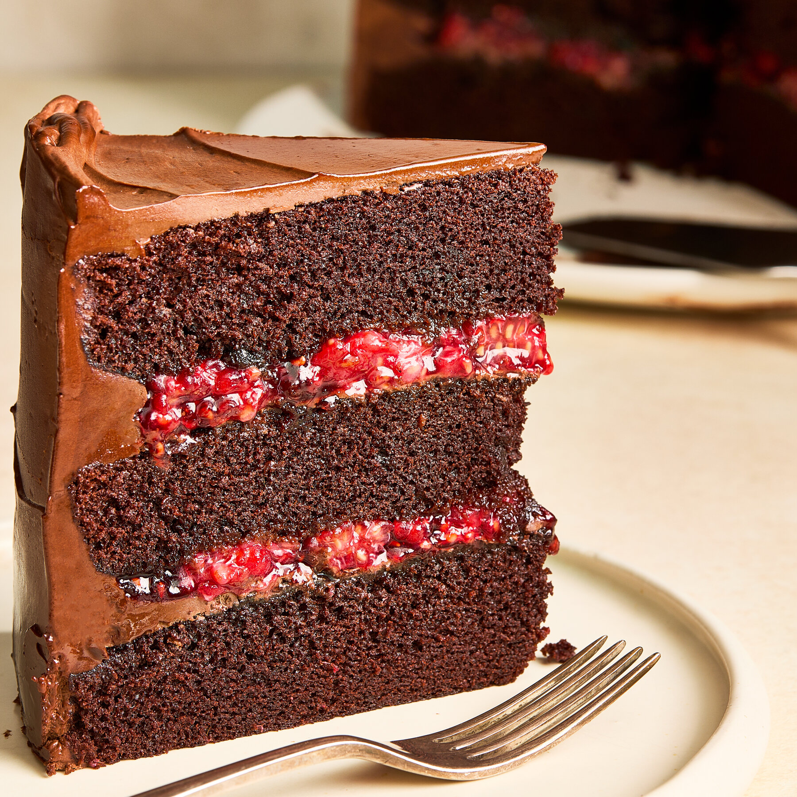
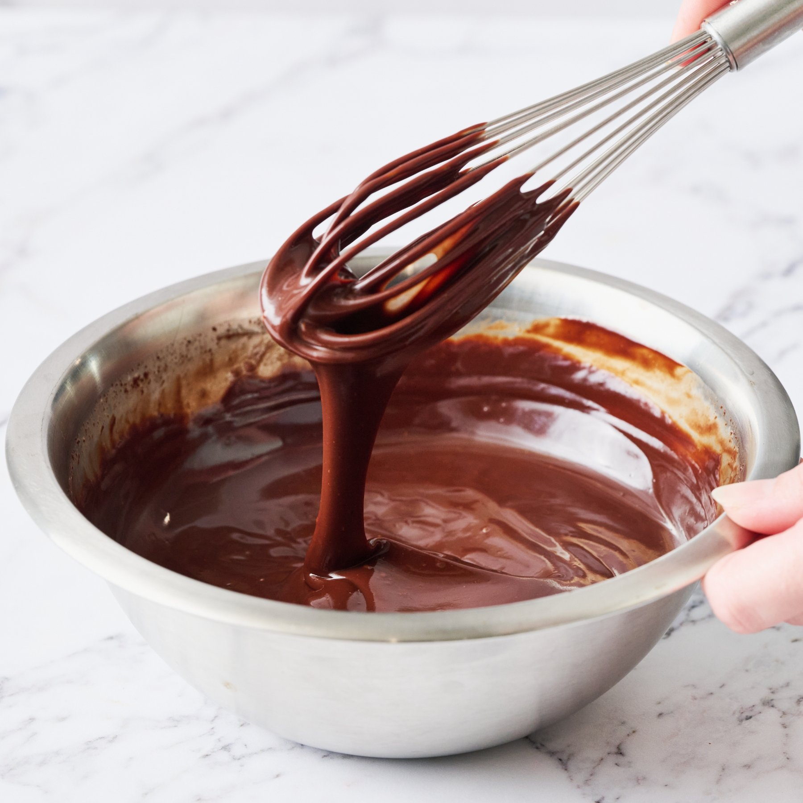

In this recipe, a rich and luxurious chocolate ganache enrobes an impressively tall chocolate cake with hidden layers of jammy raspberry filling punctuated by fresh berries. This cake is best served at room temperature so the chocolate coating is soft and easily sliced.

Total Time: About 2 hours
Prep Time: 30 minutes
Cook Time: 1½ hours
Yield: 12–16 servings
Ingredients
For the Cake
¾ cup (180 ml) neutral oil, plus more for pans
2¼ cups (450 g) sugar
2 cups (256 g) all‑purpose flour
1¼ cups (110 g) Dutch‑process cocoa powder
1½ tsp baking powder
1½ tsp baking soda
1½ tsp kosher salt
1 cup (240 g) sour cream, room temp
3 large eggs, room temp
1 Tbsp vanilla extract
1 cup (240 ml) hot coffee
For the Chocolate Ganache
18 oz dark chocolate (65–72%), finely chopped
2 tsp vanilla extract
¼ tsp kosher salt
1½ cups (360 ml) heavy cream
For the Filling and Topping
6 Tbsp raspberry jam
3 cups (360 g) fresh raspberries
Equipment
Three 8‑inch round cake pans
Parchment paper
Stand mixer or large bowl + hand mixer
Measuring cups and spoons
Whisk, spatula, and knife
Wire rack
Saucepan (for cream)
Preparation
Heat oven and prep pans: Heat oven to 350°F (175°C). Grease three 8-inch pans and line bottoms with parchment.
Mix dry ingredients: In a large bowl, stir together sugar, flour, cocoa, baking powder, baking soda and salt until no lumps remain.
Mix wet ingredients: In a measuring cup, whisk oil, sour cream, eggs and vanilla. Pour into dry mixture. Mix on low until moistened, then on medium-high for 2 minutes, scraping the bowl once.
Add coffee: Gently fold the hot coffee into the batter with a spatula.
Bake: Divide batter evenly among pans (about 2 cups per pan). Tap pans to release bubbles. Bake 30–40 minutes, until a toothpick comes out clean. Cool 20 minutes, then turn out onto a rack to cool completely.
Make ganache: Put chocolate, vanilla and salt in a heat-safe bowl. Heat cream to a simmer; pour over chocolate. Let sit 2 minutes, then whisk smooth. Chill about 30 minutes, whisking occasionally, until thick and spreadable.

Assemble layers: Trim cake tops if needed. Place one layer on a plate. Spread about ½ cup ganache on top, making a small dam at the edge. Add 3 Tbsp jam and spread to the dam. Press about 1 cup raspberries into the layer.
Second layer: Repeat with the second cake layer, ½ cup ganache, 3 Tbsp jam and 1 cup raspberries.
Top layer & crumb coat: Add the last cake layer. Spread a thin layer (about 1 cup) of ganache over top and sides. Chill until firm, about 15 minutes.
Final coat & serve: Spread remaining ganache over top and sides. Decorate with raspberries. Serve at room temperature with a hot, clean, dry knife. Store leftovers in the fridge up to 3 days.
Tip: If ganache gets too firm, set the bowl over a pan of simmering water and stir until smooth again.